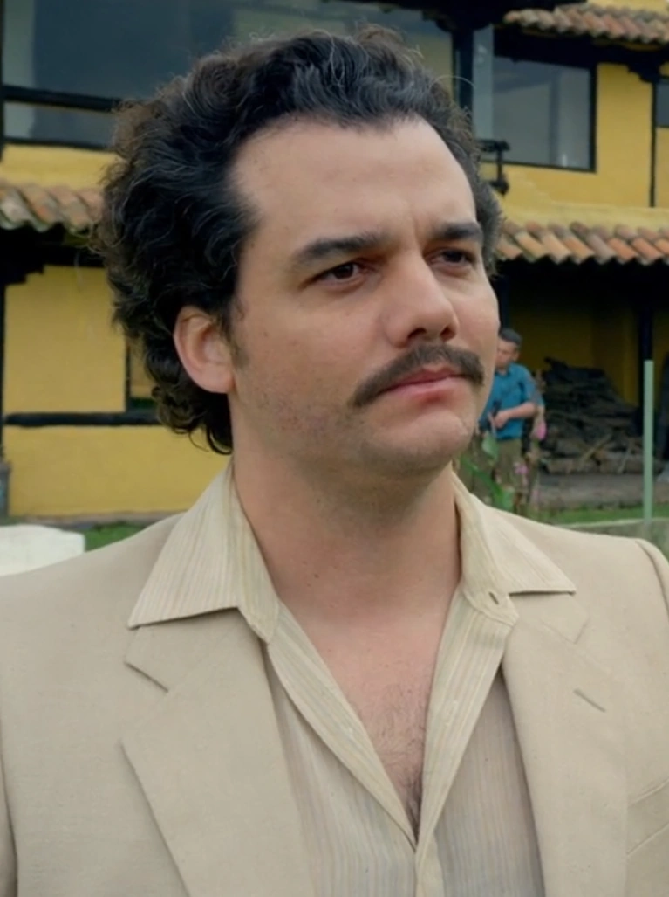

Pablo Escobar
Interpretado por Wagner Moura, Pablo Emilio Escobar Gaviria es el líder del Cartel de Medellín. Conocido como el "Patrón", Escobar se convierte en uno de los narcotraficantes más poderosos y temidos del mundo, controlando gran parte del tráfico de cocaína hacia los Estados Unidos.